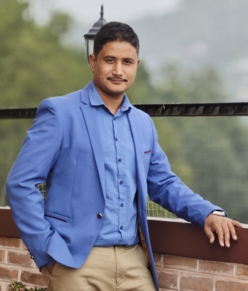

Bridging Engineering Rationale & Strategic Leadership
A journey shaped by a passion for clean code, resilient enterprise architectures, continuous learning, and community storytelling.

Quick Information
- Designation: Manager - Digital Banking
- Current Organization: Nabil Bank Limited
- Location: Kathmandu, Nepal
- Education: MBA & BE Computer Engineering
- Certifications: Oracle Certified Professional 10g
- Consulting / Freelance: Available for select advisory
Who I Am
I am Rajan Maharjan, an IT professional, developer, and digital banking manager based in Kathmandu, Nepal. Over a career spanning more than 15 years, I have worked across the entire technology lifecycle: from low-level database scripting and web application development to enterprise systems architecture, process automation, and cross-functional team leadership.
Currently, as Manager – Digital Banking at Nabil Bank Limited, one of Nepal's foremost financial institutions, I spearhead projects involving Robotic Process Automation (UiPath), core banking customization on Infosys Finacle (CBS), API management, and Microsoft Power Platform workflows. My dual background in Computer Engineering (IOE Tribhuwan University) and a Master of Business Administration (MBA, ACE Institute of Management) allows me to comfortably translate executive business imperatives into elegant, high-throughput software systems.
Outside of the enterprise arena, I am driven by artistic creativity and community impact. Through photography, I seek to document the ephemeral light of Himalayan dawns and Kathmandu's historic Newari alleys. Through Toastmasters International, I actively mentor speakers and build open-source tools that empower local clubs to run engaging, impactful meetings.
Professional Experience
A track record of technological impact and progressive leadership in commercial banking and software engineering.
Manager — Digital Banking
- AI & Solution Architecture: Leading the adoption of AI-enabled banking solutions, machine learning integration, and Copilot Studio conversational agents.
- Data Engineering & ETL: Architecting enterprise data pipelines, relational database performance optimizations, and business intelligence analytics.
- API & System Integration: Designing secure enterprise RESTful APIs, cross-platform middleware, and integrations with regulatory fintech gateways.
- Enterprise Database Administration: Overseeing mission-critical Oracle, MSSQL, and MySQL database tiers with stringent uptime and disaster-recovery SLA requirements.
- Stakeholder Alignment: Serving as the technical lead bridging executive banking divisions, compliance officers, and agile engineering squads.
Officer — Digital Banking
- Enterprise Automation Engineering: Spearheaded workflow automation leveraging Microsoft Power Platform (Power Apps, Power Automate, Power BI) and UiPath RPA.
- Finacle Integrator (FI): Configured core banking API integrations for automated document management, digital account opening, and Video KYC.
- Process Re-engineering: Engineered custom PowerShell automation scripts and automated alert dispatchers reducing manual reconciliation by over 60%.
Officer — Information Technology
- Database Administrator: Managed production Oracle and MSSQL databases, query tuning, index optimization, and backup strategies.
- Finacle CBS Scripting: Authored custom core banking scripts and tailored workflows for commercial banking products.
- SWIFT Monitoring: Oversaw SWIFT infrastructure, sanction screening engines, and payment control systems, building automated auxiliary audit tools.
- MIS Automation: Designed Management Information System (MIS) reports using Oracle PL/SQL, PHP, and MySQL.
Officer — Information Technology (Oracle DBA & CBS)
- Oracle DBA: Performed database installations, patching, tablespace management, and health checks across branch banking networks.
- CBS Engineering: Provided 24/7 second-tier troubleshooting for Finacle Core Banking operations and scripts.
Senior Web Programmer
- Led backend database architecture and PHP programming for high-traffic international client applications.
- Supervised junior developer teams, conducted code reviews, and assisted project managers in sprint milestones.
Senior Software Engineer
- Engineered scalable database structures and client web applications in PHP and relational database engines.
- Conducted rigorous QA testing, documentation, and technical client consultations.
Education & Certifications
Strong foundational engineering combined with executive business administration.
Master in Business Administration (MBA)
ACE Institute of Management, Kathmandu
Affiliated to Pokhara University
Concentrated on Project Management, Strategic Planning, Financial Analysis, and Organizational Leadership, reinforcing the ability to deliver multi-stakeholder technological transformations.
Bachelor's Degree in Computer Engineering
Kathmandu Engineering College, Kathmandu
Affiliated to Institute of Engineering (IOE), Tribhuwan University
Rigorous curriculum covering Data Structures, Relational Database Management Systems (RDBMS), Operating Systems, Computer Architecture, Algorithms, and Software Engineering.
Oracle Certified Professional 10g (OCP)
Computer Point Nepal
100 Hours Intensive Training
Mastery of Oracle Architecture, Database Administration, Backup & Recovery, Performance Tuning, PL/SQL stored procedures, and high-availability database setups.
Microsoft SQL Server 2012
Microsoft Innovation Center Nepal
Enterprise Database Track
Hands-on training in SQL Server administrative operations, indexing strategies, transaction logs management, and T-SQL query performance tuning.
Leadership, Mentoring & Personal Philosophy
"Knowledge: Sharing is Learning"
My personal motto has always been "Knowledge: Sharing is Learning." I firmly believe that technical mastery becomes truly valuable when passed on to help others grow. Whether guiding junior developers in database design, conducting Toastmasters speech workshops, or authoring open tutorials on PHP and Oracle integrations, mentoring remains at the core of my identity.
In leadership, I value quiet execution, empathetic listening, and structural clarity. In complex corporate landscapes like digital banking, the most elegant technological solution is meaningless without alignment and mutual trust across people.